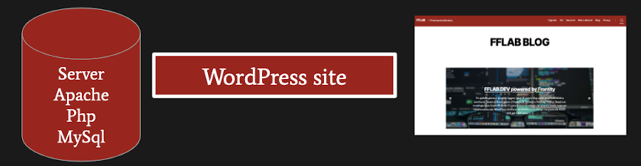
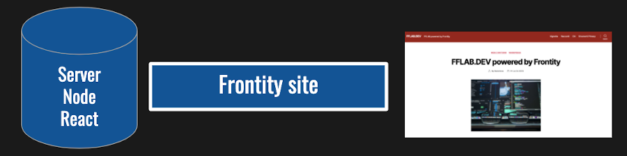
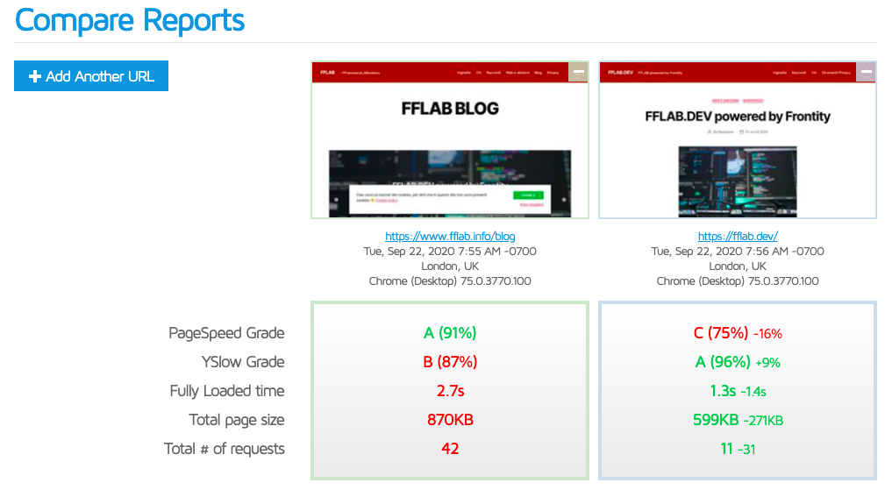

FRONTITY
da WordPress a React con facilità

👋 Ciao!

Sono uno sviluppatore front-end dal 2001
Co-organizzatore del Piacenza WordPress Meetup
Insegnante & responsabile IT alla Scuola MOHOLE di Milano, dal 2014
🐶 Ho due bassotti 🐶
Con JavaScript NON sono un fenomeno!
FRONTITY
Frontity è un framework open source.
Realizza un React-based
frontend per un sito WordPress headless.
Il sito WordPress fornirà i suoi contenuti tramite le REST API, e il frontend creato con Frontity li
renderà disponibili come una SPA
(Single Page Application) configurabile e stilizzabile..



In Locale
Sono partito dal loro Getting Started , controllando i prerequisiti (es. node.js) e installando via CLI come indicato.
npx frontity create mia-app
Verrà creata una cartella mia-app che conterrà i files necessari al progetto, nella quale entreremo per compilarli ed eseguirli con un server node con il comando
cd mia-app
npx frontity dev
a questo punto sarà attivo il sito demo in locale, configurato nel file frontity.settings.js
api: "https://test.frontity.io/wp-json/"
ora sarà sufficiente cambiare il nome del sito demo con il vostro
api: "https://ILMIOSITOWORDPRESS.IT/wp-json/"

I TEMI
I temi vanno scritti con linguaggio JavaScript - React, niente template PHP, e ce ne sono alcuni già pronti, il default Mars-theme e Twenty-Twenty che ha come modello il suo omonimo Wordpress.
IL TEMA di FFLAB.DEV
Sul mio blog fflab.info utilizzo Twenty-Twenty personalizzato con un tema child. Per fflab.dev con Frontity ho cercato di riprodurre le personalizzazioni di stile.
Interventi sul tema
Questa è un'aggiunta fatta al file
/packages/twentytwenty-theme/src/components/styles/global-styles.js
per i colori di
header e footer
#site-header,
.footer-nav-widgets-wrapper,
#site-footer{
background-color: #a00e05;
color: rgb(255, 255, 255);
}
SERVER FRONTITY
Possiamo installare Frontity sul nostro computer per provare, ma per pubblicarlo serve un ambiente JavaScript server-side.
SERVER FRONTITY

Io mi sono appoggiato a Vercel che mi ha fatto da hosting gratuito e ho acquistato solo il dominio.
Vercel
Vercel fornisce un suo linguaggio CLI per installare la propria applicazione Frontity.
Registratevi a Vercel e seguite questa documentazione
La mia dashboard di Vercel
Facciamo un tour rapido nella dashboard di Vercel
Confronto FFLAB.INFO e FFLAB.DEV
LA MIA TO DO LIST
SICUREZZA: restringere accesso REST API al solo server node o escludere /user
TEMA: creare un tema personale
MODULI: custom post type e widgets

Web slides create con Reveal.js | Piacenza WordPress Meetup 2020
Vedi anche mio post su FFLAB